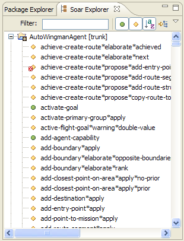

The Soar Explorer is a Package Explorer-type view that displays the Soar productions and Tcl procedures in the project. With the Soar Explorer, you can display the productions and procedures as a single list under the project or as a file tree grouped as packages according to their location in the project.
Toolbar Features
- Filter the productions and procedures by entering a text string in the Filter box.
- Toggle buttons to show/hide corresponding productions and procedures.
- Sorting the explorer elements alphabetically.
- Toggle the structure of the explorer between a project-wide list of productions and procedures, and a tree displaying the elements in packages and files.
Other Features
- Displayed elements are decorated with error and warning markers according to the status of the model.
- Selecting a production or procedure displays it in the Soar Source Viewer.
- Double-clicking a procedure or production opens an editor that displays the file and location of its definition.